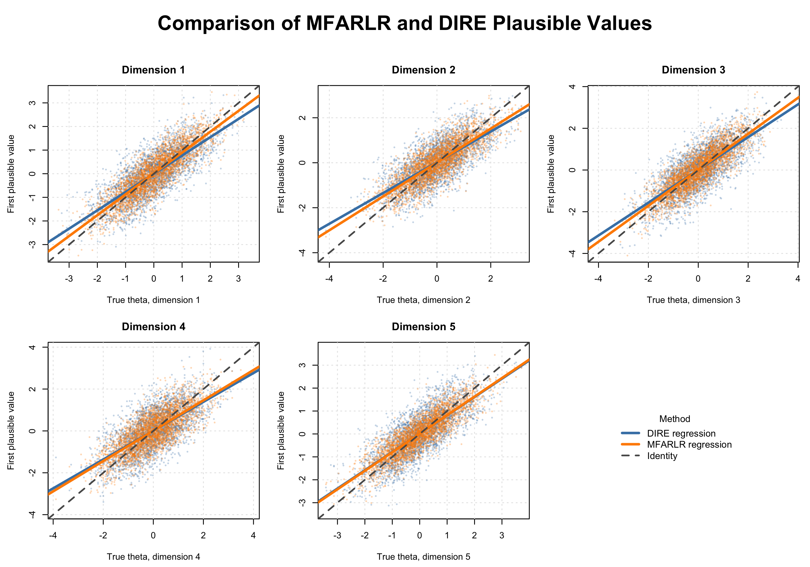

FARL: Use Factor-Augmented Regularized Latent Regression for Large-Scale Assessment
Source:vignettes/FARL.Rmd
FARL.RmdIntroduction
The FARL package implements factor-augmented regularized
latent regression (FARLR) for large-scale assessments. FARLR addresses
high-dimensional, strongly dependent background variables by decomposing
their variation into common latent factors and idiosyncratic components.
The common factors enter the latent regression, while sparse
regularization selects a parsimonious set of relevant idiosyncratic
covariates.
For multidimensional assessments, MFARLR extends this structure to several correlated latent traits. It estimates the regression coefficients and the full residual covariance jointly, avoiding separate pairwise covariance fits and preserving dependence among dimensions when plausible values are generated for group-level analyses.
The package supports:
- unidimensional FARLR estimation through
Farlr_mml(); - unidimensional PCA-based DIRE estimation through
Dire_mml(); - multidimensional FARLR-GVEM estimation through
MFARLR_mml(); - multidimensional DIRE estimation through
MDIRE_mml(); and - plausible-value generation for all fitted models.
The development version can be installed with
if (!requireNamespace("devtools", quietly = TRUE)) {
install.packages("devtools")
}
devtools::install_github(
"MAP-LAB-UW/FARL",
build_vignettes = TRUE
)
torch::install_torch()Data Input
The public fitting interfaces use the following inputs.
| Function | Covariates | Responses | Item parameters | Main covariates |
|---|---|---|---|---|
Farlr_mml() |
X |
Y |
parTab |
main |
MFARLR_mml() |
X |
Y |
parTab |
farlr_args$main |
MDIRE_mml() |
X |
Y |
parTab |
main |
The low-level unidimensional Dire_mml() interface
additionally uses the DIRE person, item, parameter, test-scale, and
formula objects demonstrated below.
One-dimensional 2PL data: sim_a1
sim_a1 contains 300 respondents, 100 background
covariates, and six dichotomous 2PL items. The true latent trait is
retained for evaluating the simulation results.
data(sim_a1)
dim(sim_a1$X)
# [1] 300 100
dim(sim_a1$Y)
# [1] 300 6
length(sim_a1$theta)
# [1] 300
main = c(1,2,15,29,45)
main
# [1] 1 2 15 29 45
head(sim_a1$Y)
# i001 i002 i003 i004 i005 i006
# [1,] 1 1 0 0 0 1
# [2,] 0 1 0 1 0 0
# [3,] 1 0 1 0 0 1
# [4,] 0 0 0 0 1 1
# [5,] 0 0 0 0 0 1
# [6,] 0 0 0 0 1 1
head(sim_a1$X[, 1:10])
# [,1] [,2] [,3] [,4] [,5] [,6] [,7] [,8] [,9] [,10]
# [1,] 0 1 0 1 0 0.2837093 0 0 1 0.3312277
# [2,] 1 1 1 1 1 0.9718186 1 1 1 0.5673807
# [3,] 1 1 1 1 1 1.2179341 1 1 1 0.7949050
# [4,] 1 1 1 1 1 1.7088599 1 1 1 0.5452621
# [5,] 0 0 0 0 0 -3.5649492 0 0 0 -1.1853080
# [6,] 1 1 1 1 1 1.2663585 1 1 1 0.2501640
sim_a1$parTab
# item b a c ItemID test subtest slop difficulty guessing
# 1 0.68394525 0.7808753 0 item1 comp main 0.7808753 0.68394525 0
# 2 0.92141771 1.0839744 0 item2 comp main 1.0839744 0.92141771 0
# 3 1.57513353 0.6168007 0 item3 comp main 0.6168007 1.57513353 0
# 4 1.63897827 1.1808368 0 item4 comp main 1.1808368 1.63897827 0
# 5 0.06180150 0.8086742 0 item5 comp main 0.8086742 0.06180150 0
# 6 0.02206284 1.0941187 0 item6 comp main 1.0941187 0.02206284 0 Rows of X and Y must refer to the same
respondents. Rows of parTab must follow the item-column
order in Y. For a 2PL item, a is
discrimination, b is difficulty, d = -a * b is
the intercept used by mirt, and c = 0.
Mixed 3PL/GPCM data: sim_a2
sim_a2 uses the same 300 respondents and 100 covariates,
with six items: three 3PL items and three three-category GPCM items.
data(sim_a2)
dim(sim_a2$X)
# [1] 300 100
dim(sim_a2$Y)
# [1] 300 6
table(sim_a2$itemtype)
# 3PL gpcm
# 3 3
sim_a2$parTab[, c(
"ItemID", "itemtype", "a", "b", "c", "b1", "b2"
)]
# ItemID itemtype a b c b1 b2
# item1 3PL 0.7808753 0.6839453 0.2364617 NA NA
# item2 gpcm 1.0839744 NA 0.0000000 0.4103240 1.2342899
# item3 3PL 0.6168007 0.9214177 0.1773176 NA NA
# item4 gpcm 1.1808368 NA 0.0000000 -1.1282366 -0.0933918
# item5 3PL 0.8086742 1.5751335 0.1758274 NA NA
# item6 gpcm 1.0941187 NA 0.0000000 -0.1558467 0.768091A nonzero c identifies a 3PL item. Finite
b1 and b2 values identify a three-category
GPCM item.
Unidimensional FARLR
Farlr_mml() provides a common interface for two
estimators.
| Method | Description |
|---|---|
FARLR_EMM |
Importance-sampling E-step, regularized selection update, and an unpenalized update for active coefficients |
FARLR_Debias |
Regularized estimation followed by correction of shrinkage bias |
The main covariates are supplied as column indices through
main. These variables remain in the population model and
are not removed by penalized selection.
FARLR-EMM
mmlcomp_emm <- with(
sim_a1,
Farlr_mml(
X = X,
Y = Y,
parTab = parTab,
method = "FARLR_EMM",
main = main,
seed = 2026
)
)
# |++++++++++++++++++++++++++++++++++++++++++++++++++| 100% elapsed=00s
# |=====================================================================================================| 100%
round(mmlcomp_emm$coefficients, 3)
# FS1 FS2 X1 X2 X3 X4 X5 X6 X7 X8 X9 X10 X11 X12 X13
# 0.157 0.518 -0.022 0.078 0.000 0.000 0.000 0.000 0.000 0.000 0.000 0.000 0.000 0.000 0.000
# X14 X15 X16 X17 X18 X19 X20 X21 X22 X23 X24 X25 X26 X27 X28
# 0.000 -0.177 0.000 0.000 0.000 0.000 0.000 0.000 0.000 0.000 0.000 0.000 0.000 0.000 0.000
# X29 X30 X31 X32 X33 X34 X35 X36 X37 X38 X39 X40 X41 X42 X43
# 0.106 0.000 0.000 0.000 0.000 0.000 0.000 0.000 0.000 0.000 0.000 0.000 0.000 0.000 0.000
# X44 X45 X46 X47 X48 X49 X50 X51 X52 X53 X54 X55 X56 X57 X58
# 0.000 0.011 0.000 0.000 0.000 0.000 0.000 0.000 0.000 0.000 0.000 0.000 0.000 0.000 0.000
# X59 X60 X61 X62 X63 X64 X65 X66 X67 X68 X69 X70 X71 X72 X73
# 0.000 0.000 0.000 0.000 0.000 0.000 0.000 0.000 0.000 0.000 0.000 0.000 0.000 0.000 0.000
# X74 X75 X76 X77 X78 X79 X80 X81 X82 X83 X84 X85 X86 X87 X88
# 0.000 0.000 0.000 0.000 0.000 0.000 0.000 0.000 0.000 0.000 0.000 0.000 0.000 0.000 0.000
# X89 X90 X91 X92 X93 X94 X95 X96 X97 X98 X99 X100
# 0.000 0.000 0.000 0.000 0.000 0.000 0.000 0.000 0.000 0.000 0.000 0.000
round(mmlcomp_emm$sigma, 3)
# [1] 0.725FARLR-Debias
mmlcomp_debias <- with(
sim_a1,
Farlr_mml(
X = X,
Y = Y,
parTab = parTab,
method = "FARLR_Debias",
main = main,
seed = 2026
)
)
# |++++++++++++++++++++++++++++++++++++++++++++++++++| 100% elapsed=00s
# |=====================================================================================================| 100%
round(mmlcomp_debias$coefficients, 3)
# FS1 FS2 X1 X2 X3 X4 X5 X6 X7 X8 X9 X10 X11 X12 X13
# 0.170 0.517 -0.016 0.091 0.000 0.000 0.000 0.000 0.000 0.000 0.000 0.000 0.000 0.000 0.000
# X14 X15 X16 X17 X18 X19 X20 X21 X22 X23 X24 X25 X26 X27 X28
# 0.000 -0.189 0.000 0.000 0.000 0.170 0.000 0.000 0.000 0.000 -0.332 0.000 0.000 0.000 0.228
# X29 X30 X31 X32 X33 X34 X35 X36 X37 X38 X39 X40 X41 X42 X43
# 0.118 0.000 0.000 0.000 0.000 -0.152 0.271 0.000 0.000 0.000 0.000 0.000 0.128 0.000 0.150
# X44 X45 X46 X47 X48 X49 X50 X51 X52 X53 X54 X55 X56 X57 X58
# 0.000 0.033 0.000 0.000 0.000 -0.164 -0.010 0.000 0.000 0.000 -0.153 0.000 0.000 0.000 0.000
# X59 X60 X61 X62 X63 X64 X65 X66 X67 X68 X69 X70 X71 X72 X73
# -0.258 0.000 0.000 0.000 0.000 0.000 0.000 0.000 0.000 0.000 0.000 -0.194 0.640 0.000 0.000
# X74 X75 X76 X77 X78 X79 X80 X81 X82 X83 X84 X85 X86 X87 X88
# 0.000 0.000 0.435 0.000 0.000 -0.263 0.000 0.000 0.000 0.000 0.000 0.000 0.000 0.000 0.394
# X89 X90 X91 X92 X93 X94 X95 X96 X97 X98 X99 X100
# -0.419 0.000 0.000 0.000 0.000 0.000 0.000 0.000 0.000 0.000 0.000 0.000
round(mmlcomp_debias$sigma, 3)
# [1] 0.62Mixed 3PL/GPCM responses
The same input interface is used for sim_a2.
Farlr_mml() determines each item type from
parTab.
mmlcomp_mixed <- with(
sim_a2,
Farlr_mml(
X = X,
Y = Y,
parTab = parTab,
method = "FARLR_Debias",
main = main,
seed = 2026
)
)
# |=====================================================================================================| 100%
PVs_mixed <- Farlr_drawPVs(
mmlcomp = mmlcomp_mixed,
npv = 5L,
seed = 2026
)
# |=============================================================| 100%
PVs_mixed$datPVs |>
head() |>
dplyr::mutate(
dplyr::across(
where(is.numeric),
\(x) round(x, 3)
)
)
# id _farl1 _farl2 _farl3 _farl4 _farl5
# 1 1 -0.450 -1.182 -0.624 -0.727 -0.993
# 2 2 -0.011 0.793 0.664 1.176 0.911
# 3 3 -0.357 -0.500 -0.274 -0.276 -1.306
# 4 4 0.619 0.303 0.130 -0.313 0.334
# 5 5 -1.238 -1.160 -1.740 -0.390 -1.060
# 6 6 1.463 1.384 0.642 0.902 1.382Multidimensional Comparison
Multidimensional large-scale assessments must model both high-dimensional, correlated background variables and dependence among latent traits. A PCA-only population model can discard low-variance covariate information that remains predictive of achievement, while fitting latent-trait covariances separately can yield an incoherent covariance estimate. MFARLR instead combines common factors with sparsely selected covariates and estimates the dimensions jointly.
The multidimensional functions retain the same compact data
interface. Both models receive X, Y, and
parTab; item slopes, intercepts, and dimension assignments
are obtained from parTab internally.
data(sim_m1)
dim(sim_m1$X)
# [1] 3000 60
dim(sim_m1$Y)
# [1] 3000 30
dim(sim_m1$theta)
# [1] 3000 5
head(sim_m1$parTab)
# 1 1 1 0.9090085 1.0852796 -0.9865284 0 item1 mcomp dimension1
# 2 2 1 -1.4605271 0.9679681 1.4137436 0 item2 mcomp dimension1
# 3 3 1 0.7797827 0.8828721 -0.6884484 0 item3 mcomp dimension1
# 4 4 1 -0.2210281 1.1166641 0.2468141 0 item4 mcomp dimension1
# 5 5 1 -0.7199442 1.0148336 0.7306235 0 item5 mcomp dimension1
# 6 6 1 0.8171910 1.1513335 -0.9408594 0 item6 mcomp dimension1 Fit MFARLR-GVEM
MFARLR uses three steps. First, factor analysis summarizes the common
variation in the standardized covariates. Second,
FARLR_Debias screens covariates within each latent
dimension, retaining predictors selected for at least one dimension.
Third, the selected sparsity pattern is held fixed while GVEM jointly
updates the coefficient matrix, person-specific variational moments, and
the full latent residual covariance. The Gaussian variational posterior
makes these updates computationally feasible without multidimensional
quadrature.
mfarlr_mmlcomp <- MFARLR_mml(
X = sim_m1$X,
Y = sim_m1$Y,
parTab = sim_m1$parTab,
farlr_args = list(
n_sam = 5L,
lambda = c(0.05, 0.10),
main = sim_m1$main,
delta.criteria = 1e-2,
iter.max = 20L,
window.size = 200L,
progress = FALSE,
verbose = FALSE,
seed = 123,
proposal_inflation = 0.2,
n_sam_final = 10L
),
selection_tol = 1e-8,
max_iter = 500L,
threshold = 1e-3,
ridge = 1e-6,
verbose = TRUE
)
# |++++++++++++++++++++++++++++++++++++++++++++++++++| 100% elapsed=00s
# Dimension 1: selected 16 of 64 coefficients.
# |++++++++++++++++++++++++++++++++++++++++++++++++++| 100% elapsed=00s
# Dimension 2: selected 15 of 64 coefficients.
# |++++++++++++++++++++++++++++++++++++++++++++++++++| 100% elapsed=00s
# Dimension 3: selected 16 of 64 coefficients.
# |++++++++++++++++++++++++++++++++++++++++++++++++++| 100% elapsed=00s
# Dimension 4: selected 9 of 64 coefficients.
# |++++++++++++++++++++++++++++++++++++++++++++++++++| 100% elapsed=00s
# Dimension 5: selected 16 of 64 coefficients.
# Running joint GVEM iterations
# |=============================================================================================| 100%
# Converged at iteration 112.
mfarlr_mmlcomp$convergence
# [1] "Converged"
mfarlr_mmlcomp$sigma
# [,1] [,2] [,3] [,4] [,5]
# [1,] 0.2190553 0.1585642 0.1757711 0.2325277 0.1732133
# [2,] 0.1585642 0.1985374 0.1529688 0.1974590 0.1520352
# [3,] 0.1757711 0.1529688 0.2157257 0.2137705 0.1667811
# [4,] 0.2325277 0.1974590 0.2137705 0.3411085 0.2100602
# [5,] 0.1732133 0.1520352 0.1667811 0.2100602 0.1827474
colSums(mfarlr_mmlcomp$index != 0)
# Dimension1 Dimension2 Dimension3 Dimension4 Dimension5
# 16 15 16 9 16 Draw MFARLR plausible values
MFARLR_drawPVs() combines the fitted multivariate
latent-regression prior with each respondent’s item-response likelihood.
Monte Carlo draws from the prior are likelihood-weighted to approximate
the posterior mean and covariance, from which correlated plausible
values are generated. These draws are intended for population and
subgroup inference rather than individual scoring. The fitted object
retains Y, the loading matrix, and the item intercepts, so
they do not need to be supplied again.
mfarlr_PVs <- MFARLR_drawPVs(
mmlcomp = mfarlr_mmlcomp,
npv = 10L,
n_mc = 20000L,
theta = sim_m1$theta,
seed = 123,
progress = TRUE
)
head(mfarlr_PVs$datPVs)
# 1 1 1.8331415 1.0255773 1.7989627
# 2 2 -1.4005349 -0.9627111 -1.3675437
# 3 3 0.8416554 0.7384778 0.8474027
# 4 4 0.6554288 0.6192607 0.5148276
# 5 5 -1.9824367 -0.9432195 -1.7840723
# 6 6 -0.6649487 -0.6527626 -1.1258259
mfarlr_PVs$mean_difference
# Dimension1 Dimension2 Dimension3 Dimension4 Dimension5
# 0.002031074 0.002331433 0.001994496 0.002648474 0.002528947 Fit multidimensional DIRE
Multidimensional DIRE provides the PCA-based comparison model. It uses the same responses and item parameters, allowing the resulting plausible values to be compared with MFARLR under a common data setup.
dire_mmlcomp <- MDIRE_mml(
X = sim_m1$X,
Y = sim_m1$Y,
parTab = sim_m1$parTab,
main = sim_m1$main,
pca_type = "cov",
use_residual = TRUE,
var_threshold = 0.90,
calcCor = TRUE
)
dire_PVs <- MDIRE_drawPVs(
object = dire_mmlcomp,
npv = 10L,
group_vars = sim_m1$main
)
# Calculating posterior distribution for construct A (1 of 5)
# Calculating posterior distribution for construct B (2 of 5)
# Calculating posterior distribution for construct C (3 of 5)
# Calculating posterior distribution for construct D (4 of 5)
# Calculating posterior distribution for construct E (5 of 5)
# Calculating posterior correlation between construct A and B (1 of 10)
# Calculating posterior correlation between construct A and C (2 of 10)
# Calculating posterior correlation between construct A and D (3 of 10)
# Calculating posterior correlation between construct A and E (4 of 10)
# Calculating posterior correlation between construct B and C (5 of 10)
# Calculating posterior correlation between construct B and D (6 of 10)
# Calculating posterior correlation between construct B and E (7 of 10)
# Calculating posterior correlation between construct C and D (8 of 10)
# Calculating posterior correlation between construct C and E (9 of 10)
# Calculating posterior correlation between construct D and E (10 of 10)
# Generating plausible values.Compare multidimensional plausible values
The two PV outputs are first restored to the original
sim_m1 subject order. PV1 is then extracted separately for
every latent dimension. Correlation and RMSE provide a compact
simulation check of latent-distribution recovery; in an applied
analysis, inference should combine estimates across all plausible values
rather than treating a single draw as an observed score.
N <- nrow(sim_m1$X)
D <- ncol(sim_m1$theta)
subject_order <- as.character(seq_len(N))
order_PVs <- function(dat) {
row_order <- match(subject_order, as.character(dat$id))
if (anyNA(row_order)) {
stop("Some subjects are missing from the PV output.")
}
dat <- dat[row_order, , drop = FALSE]
rownames(dat) <- NULL
dat
}
mfarlr_dat <- order_PVs(mfarlr_PVs$datPVs)
dire_dat <- order_PVs(dire_PVs$data)
mfarlr_first_PV <- sapply(
seq_len(D),
function(dimension) {
mfarlr_dat[[paste0("_mfarlr_D", dimension, "_PV1")]]
}
)
dire_first_PV <- sapply(
seq_len(D),
function(dimension) {
subtest <- dire_mmlcomp$subtest_names[dimension]
dire_dat[[paste0(subtest, "_dire1")]]
}
)
dimension_names <- paste0("Dimension", seq_len(D))
colnames(mfarlr_first_PV) <- dimension_names
colnames(dire_first_PV) <- dimension_names
multidimensional_comparison <- do.call(
rbind,
lapply(seq_len(D), function(dimension) {
truth <- sim_m1$theta[, dimension]
mfarlr_error <- mfarlr_first_PV[, dimension] - truth
dire_error <- dire_first_PV[, dimension] - truth
data.frame(
dimension = dimension,
MFARLR_correlation = stats::cor(
truth,
mfarlr_first_PV[, dimension]
),
DIRE_correlation = stats::cor(
truth,
dire_first_PV[, dimension]
),
MFARLR_RMSE = sqrt(mean(mfarlr_error^2)),
DIRE_RMSE = sqrt(mean(dire_error^2))
)
})
)
round(multidimensional_comparison, 3)
#dimension MFARLR_correlation DIRE_correlation MFARLR_RMSE DIRE_RMSE
#1 0.867 0.772 0.521 0.676
#2 0.816 0.724 0.588 0.724
#3 0.848 0.740 0.556 0.746
#4 0.762 0.673 0.674 0.818
#5 0.866 0.775 0.504 0.681The following figure overlays the two sets of PVs in every dimension. Solid lines are method-specific regressions and the dashed line is the identity line. A shared legend is placed in the final panel to avoid covering the data.
plot_MFARLR_MDIRE <- function(
theta,
mfarlr_first_PV,
dire_first_PV,
file = NULL
) {
theta <- as.matrix(theta)
mfarlr_first_PV <- as.matrix(mfarlr_first_PV)
dire_first_PV <- as.matrix(dire_first_PV)
stopifnot(
identical(dim(theta), dim(mfarlr_first_PV)),
identical(dim(theta), dim(dire_first_PV))
)
D <- ncol(theta)
total_panels <- D + 1L
panel_columns <- ceiling(sqrt(total_panels))
panel_rows <- ceiling(total_panels / panel_columns)
save_plot <- !is.null(file)
if (save_plot) {
grDevices::png(
filename = file,
width = 3000,
height = 2100,
res = 300
)
}
old_par <- graphics::par(no.readonly = TRUE)
on.exit({
graphics::par(old_par)
if (save_plot && grDevices::dev.cur() > 1L) {
grDevices::dev.off()
}
}, add = TRUE)
graphics::par(
mfrow = c(panel_rows, panel_columns),
mar = c(4.5, 4.5, 3, 1),
oma = c(0, 0, 5, 0)
)
for (dimension in seq_len(D)) {
truth <- theta[, dimension]
mfarlr_pv <- mfarlr_first_PV[, dimension]
dire_pv <- dire_first_PV[, dimension]
plot_range <- range(truth, mfarlr_pv, dire_pv, finite = TRUE)
graphics::plot(
NA_real_, NA_real_,
xlim = plot_range,
ylim = plot_range,
xlab = paste0("True theta, dimension ", dimension),
ylab = "First plausible value",
main = paste0("Dimension ", dimension)
)
graphics::grid(col = "gray90")
graphics::points(
truth, dire_pv,
pch = 16, cex = 0.45,
col = grDevices::adjustcolor("steelblue", alpha.f = 0.30)
)
graphics::points(
truth, mfarlr_pv,
pch = 16, cex = 0.45,
col = grDevices::adjustcolor("darkorange", alpha.f = 0.30)
)
graphics::abline(
stats::lm(dire_pv ~ truth),
col = "steelblue", lwd = 3
)
graphics::abline(
stats::lm(mfarlr_pv ~ truth),
col = "darkorange", lwd = 3
)
graphics::abline(0, 1, col = "gray35", lwd = 2, lty = 2)
}
graphics::par(mar = c(0, 0, 0, 0))
graphics::plot.new()
graphics::legend(
"center",
title = "Method",
legend = c("DIRE regression", "MFARLR regression", "Identity"),
col = c("steelblue", "darkorange", "gray35"),
lty = c(1, 1, 2),
lwd = c(3, 3, 2),
bty = "n",
cex = 1.05
)
unused_panels <- panel_rows * panel_columns - total_panels
if (unused_panels > 0L) {
for (panel in seq_len(unused_panels)) {
graphics::plot.new()
}
}
graphics::mtext(
"Comparison of MFARLR and DIRE Plausible Values",
side = 3,
outer = TRUE,
line = 2,
cex = 1.5,
font = 2
)
invisible(file)
}
plot_MFARLR_MDIRE(
theta = sim_m1$theta,
mfarlr_first_PV = mfarlr_first_PV,
dire_first_PV = dire_first_PV,
file = "multidimensional_PV_comparison.png"
)
# Main Outputs| Function | Main output |
|---|---|
Farlr_mml() |
Coefficients, residual SD, selected tuning parameter, factor scores, and method-specific designs |
Farlr_drawPVs() |
PV data, EAP estimates, posterior variances, modes, and prior means |
Dire_mml() |
DIRE mmlMeans object, coefficients, and
PCA object |
Dire_drawPVs() |
Respondent IDs and unidimensional plausible values |
MFARLR_mml() |
Coefficient matrix, residual covariance, selection matrix, variational moments, and retained inputs |
MFARLR_drawPVs() |
Multidimensional PV array, wide PV data, EAP means and covariances, and effective sample sizes |
MDIRE_mml() |
Multidimensional DIRE fit, PCA object, item assignments, and retained inputs |
MDIRE_drawPVs() |
Dimension-specific PVs and optional subgroup summaries |
Notes
- Rows of
XandYmust correspond to the same respondents. - Rows of
parTabmust follow the item-column order inY. -
mainuses column indices or names fromX, depending on the function. - Set
seedfor reproducible estimation and PV generation. -
MFARLR_mml()currently supports multidimensional binary 2PL items. -
MDIRE_mml()requires every item to load on exactly one dimension. - A larger
n_mcimproves the Monte Carlo approximation inMFARLR_drawPVs()but increases computation time. - The vignette chunks are not evaluated during routine package builds because the complete estimation examples are computationally intensive.